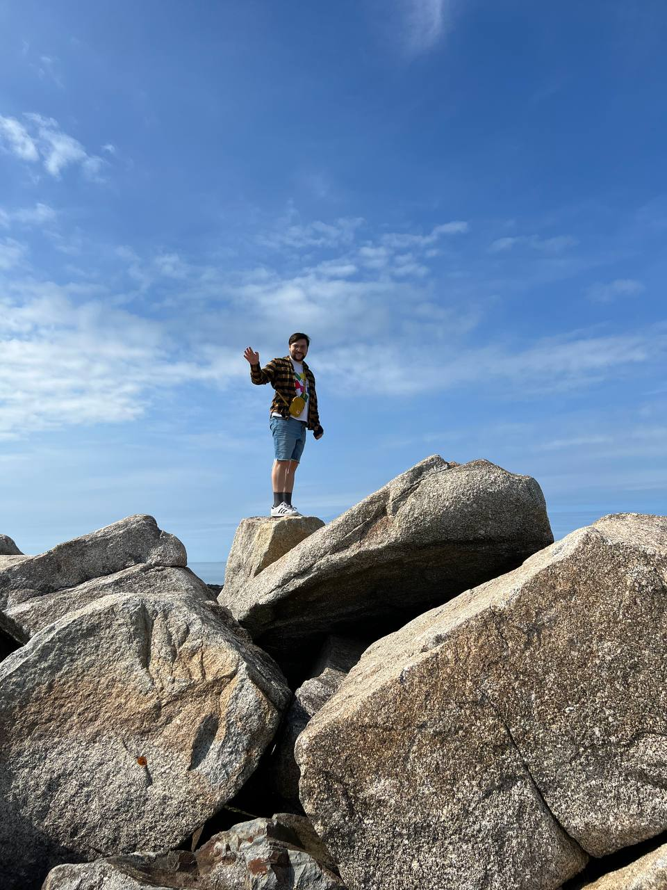
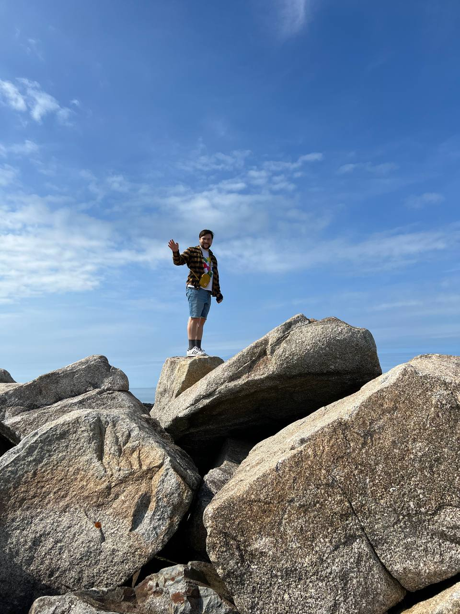

Hello! My name is Reuben Walker. I am originally from Vancouver, BC and moved to Nova Scotia in 2023.
I am interested in urbanism, sustainable transportation, and housing affordability, and I want to use GIS
to better understand these issues and make informed urban planning decisions. In my spare time I enjoy cooking,
camping, riding my bike, and making electronic music.
I am currently set to graduate from NSCC's Centre of Geographic Sciences with a graduate certificate in Geographic Information Systems
at the end of May. This June, I will be starting a position as a transit planning intern at Halifax Regional Municipality.
Needless to say, I am very excited to start on this journey! Click here to read my year-end reflection about my experience at
COGS, and my future goals.
 
